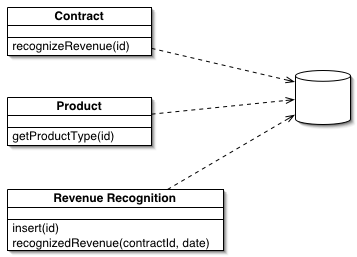

Table Module (Обработчик таблицы)

Паттерн проектирования Table Module
Описание Table Module
Одна сущность обрабатывает всю бизнес-логику для всех строк таблице БД или виде.
Один из основополагающих принципов в ООП - сочетание данных и методов обработки этих данных. Традиционный объектно-ориентированный подход основан на объектах с соответствием, как, например, в паттерне Domain Model. Таким образом, если есть класс Employee, люой экземпляр этого класса соответствует конкретному работнику. Эта структура работает хорошо, потому что, имея связь, можно выполнять операции, использователь отношения, и собирать данные о работнике
Одна из проблем в паттерне Domain Model заключается в интерфейсе к БД. Этот подход относится к БД, как к сумашедшей тётушке, запертой на чердаке, с которой никто не хочет говорить. Частенько, приходится сильно постараться, чтобы записать или считать данные из БД, преобразуя их между двумя представлениями.
Паттерн Table Module разделяет логику области определения (домена) на отдельные классы для каждой таблицы в БД и один экземпляр класса содержит различные процедуры, работающие с данными. Основное отличие от Domain Model заключается в том, что если есть несколько заказов, то Domain Model будет создавать для каждого из заказов свой объект, а Table Module будет управлять всем заказами при помощи одного объекта.
Использована иллюстрация с сайта Мартина Фаулера.